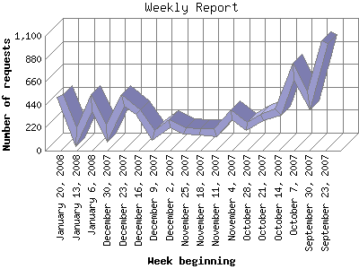

The Weekly Report identifies the activity for each week within the report
time frame. Remember that one page hit can result in several server requests
as the images for each page are loaded.
Note: Depending on the
report time frame for this report the first and last week may not represent
a full seven day week, resulting in lower hits.

| Week beginning | Number of requests | Number of page requests | |
|---|---|---|---|
| 1. | September 23, 2007 | 1,040 | 164 |
| 2. | September 30, 2007 | 481 | 71 |
| 3. | October 7, 2007 | 755 | 97 |
| 4. | October 14, 2007 | 371 | 68 |
| 5. | October 21, 2007 | 315 | 77 |
| 6. | October 28, 2007 | 230 | 96 |
| 7. | November 4, 2007 | 342 | 112 |
| 8. | November 11, 2007 | 170 | 46 |
| 9. | November 18, 2007 | 182 | 65 |
| 10. | November 25, 2007 | 187 | 49 |
| 11. | December 2, 2007 | 258 | 115 |
| 12. | December 9, 2007 | 148 | 54 |
| 13. | December 16, 2007 | 372 | 261 |
| 14. | December 23, 2007 | 477 | 378 |
| 15. | December 30, 2007 | 167 | 43 |
| 16. | January 6, 2008 | 454 | 102 |
| 17. | January 13, 2008 | 125 | 68 |
| 18. | January 20, 2008 | 524 | 55 |
Most active week beginning December 23, 2007 : 378 pages sent. 1,040 requests handled.
Weekly average: 106 pages sent. 366 requests handled.
This report was generated on January 25, 2008 06:11.
Report time frame September 27, 2007 08:42 to January 24, 2008 22:05.
| Web statistics report produced by: analog 6.0 / Report Magic 2.21 |